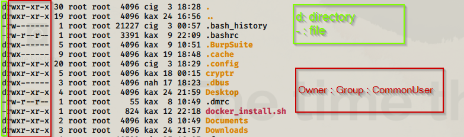

pwd : Present Working Directory
cd : Change Directory
cd .. //Comeback 1 step
cd destination //To move to a destination
mkdir : To make a directory
mv : To cut and paste file from source to destination
mv source destination
cp : To copy a file from source to destination
cp source destination
man : Gives manual/help pages for any command
man command
command --help
rm : To delete a file
ls : Display sub directories and files
rmdir : Delete folders
passwd : To change user Password
adduser : To add new user for our Kali
su : Switch user
User Permissions

When we run command ls -la we will get something shown above
On left side it contains 1:3:3:3
where 1st one tells its file or directory
and rest 3:3:3 contains the combination of w(write) x(execute)r(read)
first one is for Owner
Second is for Group
Third is for common user outside of group
To Grant file permissions:
1) Grant rwx permission to all
chmod 777 filename

To See the user passwords(in hashed format)
cd /etc/shadow
To See the user list
cd /etc/passwd

If User is added in sudoers file he/she can use power of root users